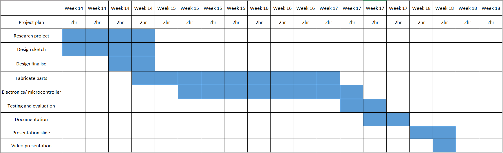
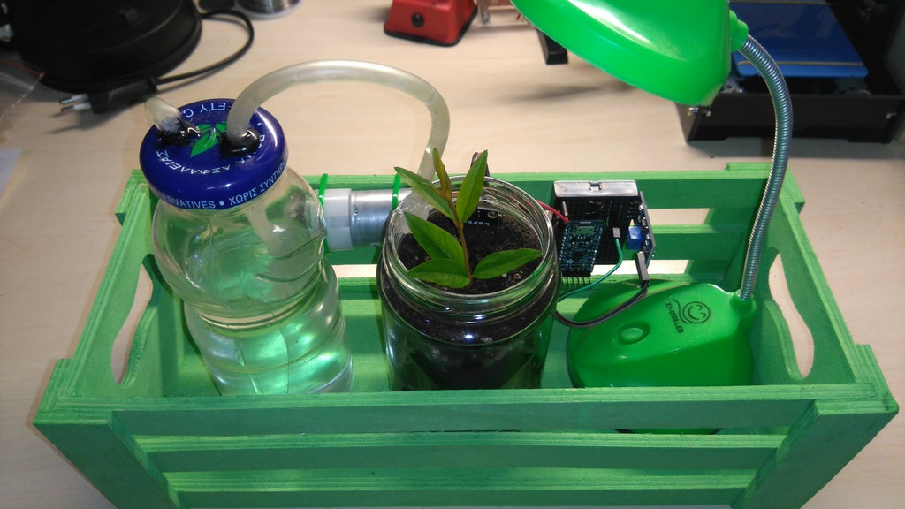
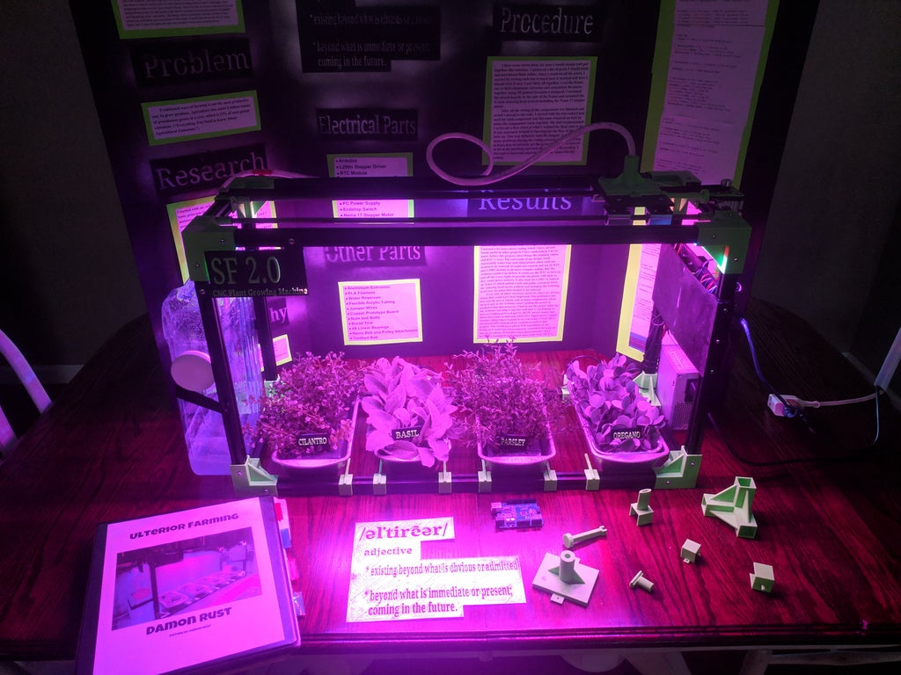
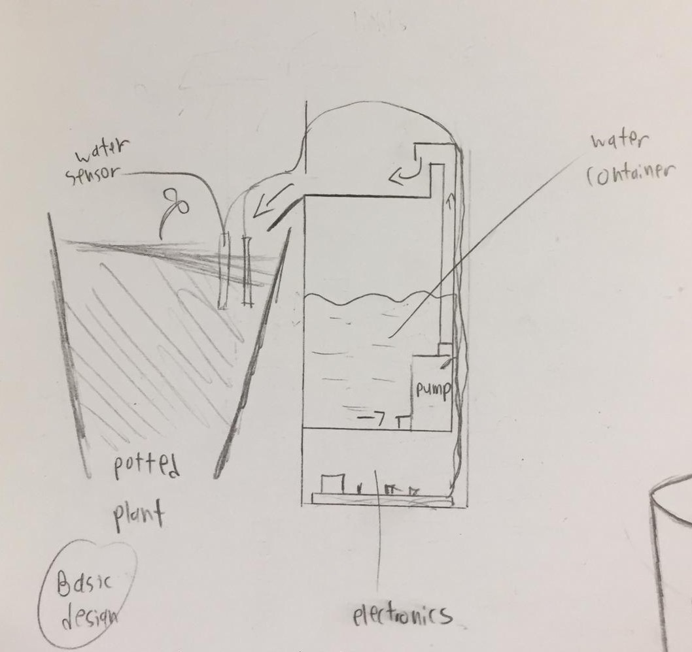
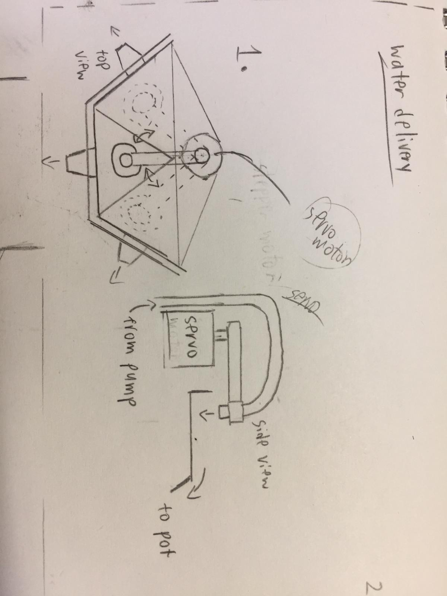

Project idea
Recently National Parks Board distributed free seed packets to households, however most are so busy with work they end up forgetting to take care of the plants, mainly forgetting to water them. (At least that is a problem my parents face when attempting to grow vegetative plants).
With that I was thinking how it would be nice to have a machine that could automatically water the plants for you, so all you need to do is to remember to refill the water container.
Design brief
Project title: Automatic potted plant watering system
Function: Manages and dispenses water to multiple plant pots automatically
With my project idea finalized I created a Gantt chart to help manage and track the progress of my project. Given 4 weeks with 8 hours per week here is the rough plan I came up with:
Research
I did some research on existing projects and noted some features I can borrow to implement in my own project.
- Arduino Automatic Watering System from Instructables

Here a water sensor is used to detect if the moisture level in soil falls below a threshold, turning on a DC motor pump.
- CNC Arduino Plant Growing Machine from Instructables

This project is more complex and uses an addition of stepper motors to water multiple plant containers, it also has grow lights built into it to help cultivate the plants faster.
Going through multiple watering systems people have done, I decided the functions I want to implement into my design:
Have a water sensor detect soil dryness and control a DC motor water pump, this is the basics of an automated watering system.
As I want a single system to be able to manage multiple pots, I came up with a mechanism where the watering tube would be connected to a servo motor, where it will position to dispense water to the specific pot.
It basically works by positioning the tube (connected to the DC pump) to a spout which directs the water flow onto the plant pot.

And so I decided to call the project "Plant Fountain" as the method of water delivery from a spout makes it look like some sort of water fountain display (also helps in Aesthetics).
Designing
Next is desinging how the Plant Fountain would look like. Here is the list of materials I will be working with:
| Item | Quanitiy |
|---|---|
| Arduino controller | 1 |
| 9g Servo motor (positional) | 1 |
| Arduino water sensor | 3 |
| 5V DC motor water pump | 1 |
| Tubing (for pump) | - |
| Flower pot | 3 |
| Water bottle / anything that can contain water | 1 |
| Acrylic (3mm thick) | - |
The design process was a back and forth from drawing to designing the model on FUSION 360. After multiple designs I finalised the design I prefer and think that would work.


In total the whole structure consist of 3 parts: The Tower (plywood), Servo support (acrylic) and the spouts (3D printed). I designed all of them in a single project so its easy to visualise how everything would fit together. View the tabs to see how each part is done:
×


The tower
The tower is the main structure of the plant fountain. It basically houses the electronics and mechanisms. For the Tower I decided to use plywood.
For the foundation I start with the previously made Laser cut box, from there I alter the parameters to the appropriate measurements.
First up the base: I created a new sketch for the base design extension and join extrude it. I also fillet the sharp edges.
To fit the spouts into the tower I cut out a square from the top to the measurements of the width of the spouts.
And to support the spouts mid air I created another floor, extruding as a new component and using the combine cut function to create tabs on the walls.
I decided to create a sliding door near the base in order to access the electronics when the tower is fully constructed. I did this by first cutting a square hole to my desired measurements.
I need to make some guard to prevent the door from falling, so I more tabs next to the existing ones 3mm apart (assuming the wood thickness is 3mm). I then extrude a new component and use combine cut.
I lastly extrude on the guard the actual door. I cut a slot in the door so I can slide it out. Its also a way to provide power to the electronics.
Back to the middle floor, I cut a T-shape for wiring to pass through. I also decided to turn the large cuts for the spouts into a small square, that way I can slide the spout in.
I also cut some holes for the wires and tubing.
Lastly the cover, I sketched a square with tabs, extrude as a new component and use combine cut for the other sides.
And the tower is complete!
×


Servo Support
The servo support holds the servo motor and water spout in place, as this area will most likely be splashed with water I decided to make it out of acrylic.
I created a new component for the servo support. I first create a sketch plane on the underside of the spout hole and extrude it to the thickness of the acrylic sheet.
Next I cut holes for the spouts, electronics and servo.
To prevent the spouts from sliding in and out, I decided to create guards to hold it in place: I first cut tabs onto the main piece. Then extrude a new component and use combine cut to create tabs on the other piece. I did it for all 3 spout holes.
To keep the support in place I decided to have it slot into the tower, so I extrude tabs on the sides and combine cut the tabs into the wood sides.
I lastly cut holes for the servo screws.
Completed acrylic servo support:
×


Spout
The water will be dispensed onto the spout, which will channel the water down onto the plant pots located under it.
I create a new component for the spout. I create a sketch with the tower's middle floor as the base and the servo support as outline.
I then extrude it and chamfer the sides down.
I used shell with thickness 3mm to create form the spout mouth.
I fillet the bottom edge and chamfer the top of the mouth
To create a slant, I used plane at angle and create a plane at the mouth at an angle of 13 degrees, I then extrude the base, select extent type "to object" and select the angled plane.
I lastly fillet the sides round.
The spout is complete: I will need 3 of these.
prototyping
After the initial design, I made a cardboard prototype of the design, this way I can test the design before using the actual materials. I also 3D printed a single spout to test.


After prototyping, some slight design changes has been made:
- Shifted tube hole to the cover (so the tube will not obstruct the servo rotation)
- Changed material used to make the tower from wood to acrylic (so water will not damage it)
The final design model:
Download Plant Fountain.f3dFabrication
Once the design is done, I convert the parts to its appropriate files to prepare for fabrication.
Laser cutting
The Tower and Servo holder are to be cut with the laser cutter, so I convert the part faces into a dxf file. I then use LibreCAD to check the outlines are correct. I also compiled all the parts into a single file.


3D printing
The spouts and servo horn require 3D printing to fabricate. I first convert the file to STL

I require 3 spouts, but becuase I printed 1 for testing here I only need 2.
Ultimaker Cura Print settings:
- Layer height = 0.2mm
- Infill: Density = 15%, Infill pattern = Grid
- Print speed = 90mm/s
- No support generation
- No build plate adhesion
Electronics
The idea is to direct the servo towards the pot that is detected dry, and turns on the DC motor to pump water until no longer dry.
I first prototype and program the circuit on ThinkerCAD.

As ThinkerCAD does not have a water sensor, I used an LDR as replacement as both sensors are analog and works the same way.